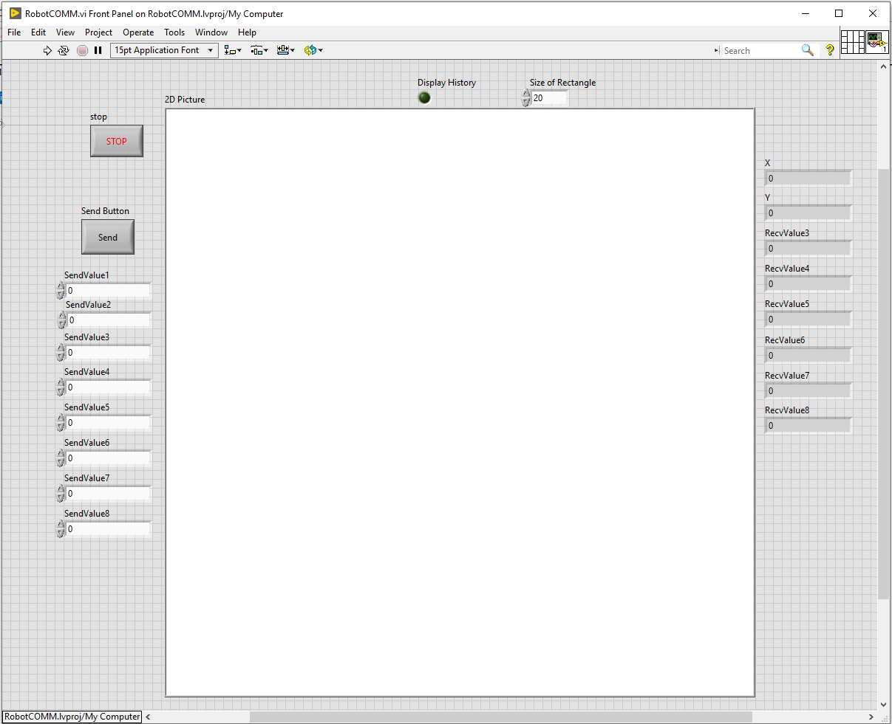

SE 423 Mechatronics
Laboratory Assignment #6
LADAR Sensor, LABVIEW/RPI4/Linux Communication, Wall Following and Dead
Reckoning
Three Week Lab
TA Check-Offs in this document: 9 (marked “TA Check-Off” in the text and listed at the end)
Big Picture: This lab has a number of tasks to get you to the final goal so a general overview is in order. The final goal is to have your robot follow a wall that is on its right and when it comes to a corner turn to the left and continue right wall-following. At the same time, continuously upload coordinate data to your LABVIEW program displaying the robot’s location relative to a start position. Along the way to this final goal of wall following, you will be given a Linux programming introduction by modifying a Linux program to perform the communication with the F28379D to the Linux console application.
I highly recommend you READ THE LAB COMPLETELY BEFORE YOU START CODING so you get the full picture of the assignment.
Our first and third exercises are to merge code together to be used in one F28379D application. For this exercise, I would like you to merge your HW#3 MPU-9250 SPI code into your final Lab 5 code that allowed you to steer around your robot and also found the bearing of the robot using the LPR510 rate gyro. You will find that the MPU-9250’s Z axis rate gyro has significantly less noise and integral drift compared to the LPR510, so from this lab forward, we will be using the MPU-9250’s Z gyro to find bearing. I am leaving the LPR510 sampling code in the project as one more sensor you could possibly use in your final project as a “backup sensor” to detect possible errors.
The first step when merging code is to make a backup of the code you are merging into. We are going to start merging into your Lab 5 project, so make sure to back up your current Lab5main.c file somewhere you can find it easily. We will be creating a Lab 6 project in Exercise 2, but for now we will work in your Lab 5 project. Perform the following steps to merge your HW#3 code into Lab 5’s code:
The goal of this next step is start the transmission to SPIB and the MPU-9250 inside the ADCC_ISR() interrupt which is occurring every 1ms and move all your zeroing and PI control code into the SPIB_isr() function instead of the ADCC_ISR() function. The reason for this is that I want all the sampling of sensors to be complete before the PI control (and any other future control) is calculated. In HW#3, you setup a timer to interrupt every 1ms and inside that interrupt function you pulled low the MPU-9250’s Slave Select and sent the correct number of 16 bit words to SPIB for communication to the MPU-9250. Here I would like this SPIB code copied to your Lab5’s ADCC_ISR() function right after your ADCC_ISR() code reads the four Results registers and converts the readings to volts. Since the ADCC_ISR() function is called every 1ms your SPIB_isr() function will also be called every 1ms after the short number of microseconds it takes to transmit (and receive) the SPI data to/from the MPU-9250. Your ADCC_ISR() function should have a structure similar to this after you copy in the SPIB start transmission code.
__interrupt void ADCC_ISR(void) { adcc2result = AdccResultRegs.ADCRESULT0; adcc3result = AdccResultRegs.ADCRESULT1; adcc4result = AdccResultRegs.ADCRESULT2; adcc5result = AdccResultRegs.ADCRESULT3; // Here covert ADCIN to volts adcC2Volt = adcc2result*3.0/4095.0; adcC3Volt = adcc3result*3.0/4095.0; adcC4Volt = adcc4result*3.0/4095.0; adcC5Volt = adcc5result*3.0/4095.0; //!!!!!!!!!!!!!!!!!!!! SPIB start transmission code //Paste your code copied from HW#3 timer interrupt that first // pulls Slave Select Low and then //writes to SPITXBUF the correct number of 16bit words to // communicate with the MPU-9250 //!!!!!!!!!!!!!!!!!!!! //!!!!!!!!!!!!!!!!!!! //Then all your zeroing and PI control code will be here for // this step only. In the next step // you will be cutting this code from here and moving it to the // SPIB_isr(). //!!!!!!!!!!!!!!!!!! AdccRegs.ADCINTFLGCLR.bit.ADCINT1 = 1; //clear interrupt flag PieCtrlRegs.PIEACK.all = PIEACK_GROUP1; }
Now cut all the zeroing and PI control code you wrote in your ADCC_ISR() function in Lab 5. Paste this code into your SPIB_isr() function so it has the below structure: (Note if the count variable you are using in this code has a name associated with ADCC, like numADCCcalls, change the name to i.e. numSPIBcalls)
__interrupt void SPIB_isr(void){ // Code that pulls Slave Select Back Hi to de-select the MPU9250 // the read SPIRXBUF the correct number of times to read all the // accel and gyro axes // converts the accel readings to +/-4g range and gyro to 250 // degrees/second range // then here paste all your ADCC_ISR() code that finds the zeros // and then calculates // the PI control SpibRegs.SPIFFRX.bit.RXFFOVFCLR=1; // Clear Overflow flag SpibRegs.SPIFFRX.bit.RXFFINTCLR=1; // Clear Interrupt flag PieCtrlRegs.PIEACK.all = PIEACK_GROUP6; }
As a final step, just as you did at the end of HW#3, change the MPU-9250 accel zero registers so that the accelx, accely and accelz readings are close to zero at rest. Remember that these zero registers are the last 6 registers you write to in the setupSpib() function.
Demo this all working to your TA.
The LADAR that is on each robot is the URG-04LX Laser Range-Finder, http://www.acroname.com/robotics/parts/R283-HOKUYO-LASER1.html.
LADAR stands for Laser Detection And Ranging. Also many people/companies also call these sensors LIDAR Light Detection And Ranging. I tried my best to be consistent in my given code to use “LADAR” but forgive me if I slipped somewhere and used “LIDAR”. Every 100ms the LADAR gives the robot 228 different distance readings in an angle range of 240°. The range of the reading is between 20mm and 5700mm or 0.065ft and 18.7ft. If a reading is less than 20 then it is an error code instead of a distance reading. The error codes are given in this document http://coecsl.ece.illinois.edu/se423/datasheets/ladar/hokuyo-URG-04LX-SCIP1-com-spec.pdf. With 228 points in the 240° operating range, this is a distance reading every 1.05° starting on the right side of the robot. The angles start on the right of the robot with the angle of -120° and end on the left side of the robot with an angle of 120°. As you would expect, 0° points straight ahead of the robot. If you would like to read more about this LADAR its documentation is found at http://coecsl.ece.illinois.edu/se423/datasheets/ladar/.
You will start with a new starter project called “LADAR_PICOM_starter” that reads the LADAR data and stores the distances and angles to a structure array ladar_data. The angles are stored in ladar_data[i].angle float element and the distances are stored in “ping then pong” float elements ladar_data[i].distance_ping and ladar_data[i].distance_pong. Each array index specifies an angle and the distance sensed at that angle. When you are deciding which of these 228 date points you would like to use in your robot navigation code, debug your code and place this array in the “Watch Expressions” window. Then you can look at the angle of each index and decide what distances to use.
So go ahead and create a new project with the starter project “LADAR_PICOM_starter.” Rename this project as your Lab6¡initials¿ project. In Exercise 3 we will merge your Lab 5 code with this project. Once you have renamed this project and its main C-file, build and run this code. Once running, you should see that two LADAR distances are printed to the text LCD screen. One distance is straight ahead at angle zero and the other distance is around -62º. Put your hand in front of the LADAR and make the distances displayed change as you move your hand back and forth in front of the LADAR. Add the ladar_data variable to the CCS Watch Expressions. Turn on continuous refresh and see the different distances, at their respective angle, change as you move an object in front of the LADAR. Note what index is -90º, 0º and 90º.
Next change the build in CCS so that your code is flashed to the F28379D board. You can select the small arrow in the hammer icon to switch to “Flash”. Then remember to click the “bug” icon to download your program to flash and run. Once your CCS program is flashed to your F28379D, shutdown the RPI4 buy either connecting to a terminal and type “sudo shutdown now” or buy using the wireless mouse to perform a shutdown from the window interface. Either way make sure you wait about 15 seconds after shutdown to power off the RPI4. Your TA can also show you a flashing green LED on the RPI4 that tells you when the RPI4 is fully powered down. Power off your robot and replace the power supply with a battery pack. Turn on the robot and notice that your program is running on the F28379D processor. Wait for the RPI4 to boot and display its window environment on the LCD screen. If you watch the LCD screen at the top right, you will also notice that the RPI4 does not immediately connect to WiFi. Watch to see when the WiFi connects. If you hover the mouse pointer over the WiFi icon, Linux displays the IP of your RPI4. It should be the IP printed on your benches PC, 192.168.1.7?. There are many ways to connect over WiFi to your RPI4. In this lab we are going to show you a number of the ways. For this exercise you are going to be running some given Python3 code that will plot all the 228 LADAR points. So we will need to connect to the Linux graphical interface to see the plot. On the PC at your bench run the application VNC Viewer. Once launched type in the IP of your RPI4 192.168.1.7? and hit enter. Once prompted type in the user “pi” and password “f33dback5”. The same window environment on the LCD screen should appear in a vertical screen on your PC. Use the terminal icon at the top of the screen to open two terminal sessions. In one, type “cd LadarSerialApp_shm_plot” and then type ./ladar_server to run the serial port application that is collecting the LADAR data. In the second terminal session also cd (change directory) into “cd LadarSerialApp_shm_plot” and then type “python3 plot_shm.py”. After a few seconds you should see the LADAR data plotted in the VNC Viewer and on the LCD screen. Move you robot inside the lab room and notice how well the LADAR sees the straight edges of the wood and obstacles. Move and rotate your robot to different locations and notice how the LADAR plot changes. NOTE that right now the robot thinks it is always at x=0, y=0 and angle = 0.
When you are done observing the plots of the LADAR data, return your robot to you bench. Exercise 3 is some more code merging steps that take a bit of time so let’s go ahead and power off our RPI4 by the graphical menu or simply type “sudo shutdown now” in one of the VNC Viewer terminal. Again wait about 15 seconds after shutdown to turn off power to your robot.
Before we go on to Exercise 3 let’s first run through an overview of this LADAR starter project code. We heavily use the UART serial ports of the F28379D processor in this robot design. Up to this point in the class you have used UARTB to interface with the robot’s text LCD screen. This starter project adds the use of UARTC to allow the F28379D to communicate with the LADAR sensor. In addition this starter project adds UARTD as the communication path to and from the F28379D and the RPI4. This is the reason the starter project’s name is LADAR_PICOM_starter.
As you read this section, look through your current Lab6 LADAR code. Starting out you will notice there are more global variables defined for this project. You will become familiar with what these variables and arrays are used for in the communication of data between the F28379D and the RPI4.
The main() function has some additional initializations that are needed for SerialC (UARTC) and SerialD (UARTD) and initializing the LADAR over SerialC. These additional initializations will be spelled out in Exercise 3 when you merge this code into your Lab 5 code.
Notice that CPU Timer 1 is set to call its interrupt function every 100ms. Inside the interrupt function the “G_command” is sent to the LADAR which requests a new set of 228 readings from the LADAR. See http://coecsl.ece.illinois.edu/se423/datasheets/ladar/hokuyo-URG-04LX-SCIP1-com-spec.pdf page 6, if you are interested in the format of the command sent to the LADAR. 100ms is the fastest rate the LADAR can measure its 228 distance readings.
Inside the C file, F28379dSerial.c, towards the bottom of the file find the four RX?INT_recv_ready() functions, one for each Serial port A, B, C and D. Look at RXCINT_recv_ready() function. SerialC is connected to the LADAR and this interrupt function receives one character at a time from the LADAR. Using the protocol specified in the LADAR’s data sheet, this function collects the 228 distance readings from the LADAR and assigns them back and forth between the distance_ping array element and the distance_pong array element. (NOTE!, you would not want to just look at the distance_ping data and ignore the distance_pong data because doing so would change your LADAR sample rate from every 100ms to every 200ms.) Still in RXCINT_recv_ready() towards the end of the function, when LF-count == 2 this means all the LADAR data has been collected. When it is finished collecting data it runs the line of C code
// Manually cause the interrupt for the SWI2 PieCtrlRegs.PIEIFR12.bit.INTx10 = 1;
This line of code is posting what we will be calling a SWI or software interrupt. These SWIs will be explained more but the short answer is that an SWI is an interrupt function that can be interrupted by higher priority interrupts but has higher priority and can interrupt main’s continuous while(1) loop.
Again inside the C file F28379dSerial.c, see the SerialD receive interrupt function RXDINT_recv_ready(). This function is called for each character sent from the RPI4 to the F28379D board. I have created my own communication protocol for communicating back and forth between the RPI4 and the F28379D. You will become more familiar with this protocol when you make changes to the data size sent and received in your final project work. Notice that there are two arrays that get filled in this function fromLVvalues and LinuxCommands. You will learn in later sections of this lab that the fromLVvalues are 8 values you can send from LABVIEW to the F28379D and the LinuxCommands are 11 values you will be able to send from a Linux application you will be creating.
Now look back at your project’s main C file and find that the last three functions are the three SWI (Software Interrupts) that I have created for your use. Notice that their names are SWI1_HighestPriority, SWI2_MiddlePriority and SWI2_LowestPriority. These three SWIs are giving you additional locations to place code that is important but could take a little while to complete and therefore should not be put in a normal hardware interrupt. Remember normal hardware interrupts disable the global interrupt not allowing any other interrupt function, even one with higher priority, to interrupt it. This is where the SWI interrupts are different. They can be interrupted by normal hardware interrupt functions.
Interrupt hierarchy for SWI1_HighestPriority:
Main’s while(1) loop can be interrupted by SWI1_HighestPriority ; All HWIs can interrupt SWI1.
Interrupt hierarchy for SWI2_MiddlePriority:
Main’s while(1) loop can be interrupted by SWI2_MiddlePriority ; SWI1 can interrupt SWI2 ;
All HWIs can interrupt SWI2.
Interrupt hierarchy for SWI3_LowestPriority:
Main’s while(1) loop can be interrupted by SWI3_LowestPriority ; SWI1 can interrupt SWI3 ;
SWI2 can interrupt SWI3 ; All HWIs can interrupt SWI3.
Look at the SWI1 function. Notice the code here is using the LVvalues (LABVIEW) and LinuxCommands arrays. This is where in later exercises you will look at the values received from both Linux and LABVIEW. Also in SWI1 you will be implementing your PI speed control and wall following control every 1ms.
SWI2 is being used to process the LADAR data. Given the pose (x,y,theta) of the robot find the x,y coordinate of the obstacle or wall the LADAR distance reading is detecting. In future assignments you will use the x,y coordinates to detect obstacles in the robot’s path. Also notice here in SWI2 that I am finding a LADAR distance reading I am calling LADARfront and LADARrightfront. LADARfront is the minimum distance of the five indexes 111, 112, 113, 114 and 115 which are the distance readings around 0º. LADARrightfront is the minimum distance of the five indexes 52, 53, 54, 55, 56 which are the distance readings around 62º. You will be using LADARfront and LADARrightfront as your initial distance readings for the wall following algorithm. You are welcome to use more distance readings from the LADAR for your wall following algorithm also.
In CCS, first make a copy of your main Lab 6 source file to this point. Call in something like Lab6original.c in your project. Then make sure to “exclude it from build” in both the RAM build and the FLASH build. Then open up your Lab5.c file and copy all of its text (Ctrl-a, Ctrl-c). Then in the new Lab6.c file (not the Lab6original.c file) paste your entire Lab 5 code over the top of the lab6 code (Ctrl-a, Ctrl-v). Next we have to paste quite a number of lines of code from the Lab6original.c file into this new Lab6.c file that you just copied all your Lab 5 code into. I will list off the steps and source code below, but copy and paste the code from the Lab6original.c file instead of from this document. Make sure to paste these listed lines of code in approximately the same location they were in the Lab6original.c file.
Starting from the top of Lab6original.c and working our way down, copy and paste
#include "F2837xD_SWPrioritizedIsrLevels.h"
This include file adds support for the Software Interrupts (SWI) described above
Copy and paste the #define
#define FEETINONEMETER 3.28083989501312
Copy and paste
__interrupt void SWI1_HighestPriority(void); __interrupt void SWI2_MiddlePriority(void); __interrupt void SWI3_LowestPriority(void);
These are the predefinitions of the three SWIs
Copy and paste the list of global variables. Please copy from your Lab6original.c file just in case I missed one here
uint32_t timecount = 0; extern datapts ladar_data[228]; //distance data from LADAR extern float printLV1; extern float printLV2; extern float LADARrightfront; extern float LADARfront; extern LVSendFloats_t DataToLabView; extern char LVsenddata[LVNUM_TOFROM_FLOATS*4+2]; extern float fromLVvalues[LVNUM_TOFROM_FLOATS]; //command for getting distance -120 to 120 degree extern char G_command[]; extern uint16_t G_len; //length of command extern xy ladar_pts[228]; //xy data extern uint16_t LADARpingpong; extern float LADARxoffset; extern float LADARyoffset; extern uint16_t newLinuxCommands; extern float LinuxCommands[CMDNUM_FROM_FLOATS]; extern uint16_t NewLVData; uint16_t LADARi = 0; pose ROBOTps = {0,0,0}; //robot position // 3.5/12 for front mounting, theta is not used in this current code pose LADARps = {3.5/12.0,0,1}; float printLinux1 = 0; float printLinux2 = 0;
In main() copy and paste the initialization of GPIO61 and GPIO67.
GPIO_SetupPinMux(61, GPIO_MUX_CPU1, 0); GPIO_SetupPinOptions(61, GPIO_OUTPUT, GPIO_PUSHPULL); GpioDataRegs.GPBCLEAR.bit.GPIO61 = 1; GPIO_SetupPinMux(67, GPIO_MUX_CPU1, 0); GPIO_SetupPinOptions(67, GPIO_OUTPUT, GPIO_PUSHPULL); GpioDataRegs.GPCCLEAR.bit.GPIO67 = 1;
Copy and paste the PieVectTable initialization of the three SWIs (Make sure these lines are inside the EALLOW and EDIS statements
//Interrupt12 interrupts that are not used as SWIs PieVectTable.EMIF_ERROR_INT = &SWI1_HighestPriority; PieVectTable.RAM_CORRECTABLE_ERROR_INT = &SWI2_MiddlePriority; PieVectTable.FLASH_CORRECTABLE_ERROR_INT = &SWI3_LowestPriority;
And Delete this line that sets up the old single SWI
PieVectTable.EMIF_ERROR_INT = &SWI_isr;
Set CPU Timer1 to calls it’s interrupt every 100ms.
ConfigCpuTimer(&CpuTimer1, LAUNCHPAD_CPU_FREQUENCY, 100000);
Still in main(), copy and paste the DELAY_US line, the init_serial lines of code and LADAR for loop over the old and commented out “init_serial()” function calls.
// Delay 1 second giving Ladar Time to power on after system power on DELAY_US(1000000); init_serialSCIA(&SerialA,115200); init_serialSCIB(&SerialB,19200); init_serialSCIC(&SerialC,19200); init_serialSCID(&SerialD,2083332); for (LADARi = 0; LADARi < 228; LADARi++) { //0.017453292519943 is pi/180 ladar_data[LADARi].angle = ((3*LADARi+44)*0.3515625-135)*0.01745329; }
Copy and paste these lines of code enabling the three SWI’s interrupt source
PieCtrlRegs.PIEIER12.bit.INTx9 = 1; //SWI1 PieCtrlRegs.PIEIER12.bit.INTx10 = 1; //SWI2 PieCtrlRegs.PIEIER12.bit.INTx11 = 1; //SWI3 Lowest priority
Final step in the main() function, copy and paste these lines of code and notice that they occur after the EINT; and ERTM; statements which enable interrupts. For the UARTC functions to work correctly, interrupts need to be enabled. This code sets the baud rate of the LADAR to 115200 which on power up starts at the baud rate of 19200 bits/second.
//this change the baud rate to 115200 char S_command[19] = "S1152000124000\n"; uint16_t S_len = 19; serial_sendSCIC(&SerialC, S_command, S_len); DELAY_US(1000000); // Delay letting Ladar change its Baud rate init_serialSCIC(&SerialC,115200);
Above you setup CPU Timer 1 to have its interrupt function called every 100ms. Find CPU Timer 1’s interrupt function in Lab6original.c and notice that the “G_command” or Go command is sent to the LADAR. Paste this line into your CPU Timer 1 ISR. Note that the fastest rate you can command the LADAR is every 100ms so we are receiving data from the LADAR at its highest rate.
serial_sendSCIC(&SerialC, G_command, G_len);
Find your CPU Timer 2’s ISR. Find the line of code and comment it out.
// Manually cause the interrupt for the SWI1 PieCtrlRegs.PIEIFR12.bit.INTx9 = 1;
Here SWI1 is being “Posted”, or told to run when it can, by setting the PIEIFR12.9 bit. Comment this line out. We will come back to this and use this same line of code in the SPIB_ISR() function to post SWI1.
Search your C file and find the function SWI_isr() and delete the entire function and its predefinition. Then copy and paste all the source code of the last three SWI functions given in Lab6original.c. The three SWI functions are:
__interrupt void SWI1_HighestPriority(void)
How we are going to use SWI1 will be described in more detail below. SWI1 can be interrupted by all hardware interrupts (HWI), but SWI2 and SWI3 cannot interrupt SWI1. SWI1 can interrupt the main() while(1) loop, SWI2 and SWI3.
__interrupt void SWI2_MiddlePriority(void)
Take a look at SWI2. It is being used the process the LADAR distance data every 100ms. This code is creating another 228 element structure array that holds the x,y coordinates of each LADAR distance. It takes into account the pose (x,y,bearing) of the robot when calculating these x,y coordinates of the feature it is detecting. Currently the robot’s pose is remaining at 0,0,0. In the last exercise of this lab, you will calculate the pose of the robot with wheel speed and the integral of the MPU-9250’s GyroZ sensor.
SWI2 can be interrupted by all hardware interrupts (HWI) and SWI1. SWI2 can interrupt the main() while(1) loop and SWI3.
__interrupt void SWI3_LowestPriority(void)
SWI3 is currently not being used.
SWI3 can be interrupted by all hardware interrupts (HWI), SWI1 and SWI2. SWI3 can interrupt the main() while(1) loop.
Create two functions to issue or “Post” two of the SWIs. (SWI2 is already posted for you in UARTC’s receive interrupt function.) This way you do not have to remember the interrupt number. Don’t forget to create predefinitions for these functions at the top of your C file.
void PostSWI1(void) { // Manually cause the interrupt for the SWI1 PieCtrlRegs.PIEIFR12.bit.INTx9 = 1; } void PostSWI3(void) { // Manually cause the interrupt for the SWI3 PieCtrlRegs.PIEIFR12.bit.INTx11 = 1; }
Note here that posting does not mean call. What is happening is you are telling the PIE interrupt manager that you would like this interrupt function to be called whenever priority permits. Most of the time you will post these SWIs inside a hardware interrupt. Since hardware interrupts cannot be interrupted the SWI’s interrupt function will not be called until the current HWI exits and also will not be called if there are any other HWIs waiting to be called. The SWIs function will be called when all other higher priority interrupts are finished processing.
In the spot where you just cut all your zeroing and PI control code from SPIB_ISR(), add a call to PostSWI1(); to request that SWI1’s interrupt function be called when priority permits. Your SPIB_ISR() and SWI1 ISR should have similar formats to below
__interrupt void SPIB_isr(void){ // Code that pulls Slave Select Back Hi to de-select the MPU9250 // the read SPIRXBUF the correct number of times to read all the // accel and gyro axes // converts the accel readings to +/-4g range and gyro to 250 // degrees/second range PostSWI1(); SpibRegs.SPIFFRX.bit.RXFFOVFCLR=1; // Clear Overflow flag SpibRegs.SPIFFRX.bit.RXFFINTCLR=1; // Clear Interrupt flag PieCtrlRegs.PIEACK.all = PIEACK_GROUP6; } __interrupt void SWI1_HighestPriority(void) // EMIF_ERROR { // Set interrupt priority: volatile Uint16 TempPIEIER = PieCtrlRegs.PIEIER12.all; IER |= M_INT12; IER &= MINT12; // Set "global" priority PieCtrlRegs.PIEIER12.all &= MG12_9; // Set "group" priority PieCtrlRegs.PIEACK.all = 0xFFFF; // Enable PIE interrupts __asm(" NOP"); EINT; uint16_t i = 0;//for loop // !!!!!!!!!!!!!!!!!!!!!!!!!!!!!! // All your zeroing and PI control code goes here // !!!!!!!!!!!!!!!!!!!!!!!!!!!!!!!!! if (newLinuxCommands == 1) { newLinuxCommands = 0; printLinux1 = LinuxCommands[0]; printLinux2 = LinuxCommands[1]; //value3 = LinuxCommands[2]; //value4 = LinuxCommands[3]; //value5 = LinuxCommands[4]; //value6 = LinuxCommands[5]; //value7 = LinuxCommands[6]; //value8 = LinuxCommands[7]; //value9 = LinuxCommands[8]; //value10 = LinuxCommands[9]; //value11 = LinuxCommands[10]; } if (NewLVData == 1) { NewLVData = 0; printLV1 = fromLVvalues[0]; printLV2 = fromLVvalues[1]; } if((timecount%250) == 0) { DataToLabView.floatData[0] = ROBOTps.x; DataToLabView.floatData[1] = ROBOTps.y; DataToLabView.floatData[2] = (float)timecount; DataToLabView.floatData[3] = ROBOTps.theta; DataToLabView.floatData[4] = ROBOTps.theta; DataToLabView.floatData[5] = ROBOTps.theta; DataToLabView.floatData[6] = ROBOTps.theta; DataToLabView.floatData[7] = ROBOTps.theta; LVsenddata[0] = ’*’; // header for LVdata LVsenddata[1] = ’$’; for (i=0;i<LVNUM_TOFROM_FLOATS*4;i++) { if (i%2==0) { LVsenddata[i+2] = DataToLabView.rawData[i/2] & 0xFF; } else { LVsenddata[i+2] = (DataToLabView.rawData[i/2]>>8) & 0xFF; } } serial_sendSCID(&SerialD, LVsenddata, 4*LVNUM_TOFROM_FLOATS + 2); } timecount++; //#################################################################### // Restore registers saved: DINT; PieCtrlRegs.PIEIER12.all = TempPIEIER; }
Use the hammer icon to build your code and fix any type Os or variables you didn’t copy. Then “bug” your code and verify that all parts are working.
Demo this code to your TA: 1. Show the timing of the GPIO61 on the oscilloscope. 2. Make sure your PI controller is still working by plugging in the “Knob” encoder which should be the “turn” value of your PI controller. Enable the motors and your PI controller should turn the robot to the left and right.
Here in Exercise 4 we are going to mainly work in Linux on the Raspberry Pi 4 (RPI4) board. Before we get into Linux you need make a few small changes to your CCS project code you finished in exercise 3. Search through your code and find where you a setting “vref” and “turn”. For example you may be setting “turn” to the value of the encoder wheel. Comment out any lines of code that are setting “vref” or “turn”. It is OK for you to set them to an initial value when you declare them as globals. Then in your SWI1 function, find where the variables “printLinux1” and “printLinux2” are assigned to LinuxCommands[0] and LinuxCommands[1] and change the code so that “vref” is set to LinuxCommands[0] and “turn” is set to LinuxCommands[1]. This way you will be able to change the values of “vref” and “turn” from the Linux application we are going to build.
Now you need to get familiar with some applications to interface the lab PCs with your robot’s Raspberry Pi. For all of these methods you need to remember the IP of your RPI4 which is printed on your lab benches PC. 192.168.1.7?. The user name for the RPI4 is always “pi” and the password is always “f33dback5”.
In this document, I am going to explain the use of a file transfer program “WinSCP’ and a terminal program “putty”. WinSCP allows you to copy files back and forth to/from your RPI4 and putty gives you a wireless terminal interface to the RPI4. I will not be explaining all the details of these Windows apps, so you will probably have to do some experimenting on your own.
To run putty, open a Windows cmd prompt. At the command prompt type “putty pi@192.168.1.7?” filling in the ? with your robot’s IP. A terminal window should display and request you type in the password. Type the password and then you have a terminal wirelessly connected. Type ls and see all the folders in the username pi’s home folder. Go back to the Windows cmd prompt and press the “arrow up” key and run the same putty command again and see that you can connect to another putty terminal session You can run as many putty terminals as you need to run the applications the robot needs. By the end of the semester you will be running at least 3 if not 4 applications on the RPI4.
I want you to create a folder on the RPI4 to store your code and compiled applications. Type “mkdir nameforyourfolder” to create a unique folder name that you can store your files in. Using one or both of your netids in the directory name is one idea.
To copy files back and forth to the RPI4, you need to use another program, WinSCP. Run WinSCP and it should open with a login dialog box. The Host name is your robot’s IP. Username pi and Password f33dback5. Once you login you should see files and folders on both the left and right sides. The left side is folders on the Lab PC and the right side is folders on the RPI4. On the right side explore into the folder you just created on the RPI4. Then on the left side, explore to your repository folder on the lab PC and find the folder RPI4Code. In that folder select all three folders (LinuxCMDApp, LVCOMApp and serial_COMandOpti) and drag them into your RPI4 folder on the right panel. This will copy all the RPI4 files you will need for this lab to the RPI4’s SD card. The other very nice feature of WinSCP, is that it allows you to edit files on the RPI4 using a text editor on the Lab PCs. Explore into the LinuxCMDApp folder, right click on the LinuxCMPApp.c file and select Edit and notice that you can edit the file with WinSCPs internal editor (quite basic) and you can choose “Edit With” and select and save another editor to use like notepad++ or vscode. Ask your TA to help you find where those other editors are located on the Lab PCs. Go ahead and edit the LinuxCMDApp.c file.
Before we build and run the LinuxCMDApp application lets go through its code. In order for the F28379D to communicate with the RPI4 we will be using UARTD (SCID) of the F28379D connected to the RPI4’s UART2. You will also find that we will want to have multiple RPI4 applications communicate information with the F28379. For that reason I give you a “COM” application (serial_COMandOpti) that will take care of the UART interface and protocol. Your application will just need to communicate to this “COM” application the data needing to be transmitted. The method we will use to communicate between these applications is shared memory. Linux allows you to create files that are sitting in RAM instead of an actual file saved to the SD card. So looking at the top of LinuxCMDApp.c notice the definition of the shared memory structure shared_mem_ptr_recvfrom_LINUXCMDApp. Scroll down into the main() function and find sem_open(), shm_open() and mmap() function calls. This is how the LinuxCMDApp connects to the shared memory already created by the serial_COMandOpti application. Since serial_COMandOpti creates the shared memory, you will have to remember to run this application first before you run LinuxCMDApp. You will note here that we are also creating a semaphore. A semaphore is an operating system flag that allows you to signal to another application that an event has occurred. In our case we will be signaling that new data is ready in the shared memory for the serial_COMandOpti to read and send to the F28379D.
Scroll down a bit farther and find the while loop. In the while loop a list of commands are printed out. Then the “mygetch” function is called that waits for the user to type in one of the letters in the list of commands. For example if you type ‘e’ the program exists. If you type ‘s’ the program will prompt you to type in a floating point number that will set the value of “vref” in your PI control. Study the code to see what the other commands perform. Notice that after you press a command letter the shared memory is filled with the values to send. Currently only vref and turn are being sent. At the end of this exercise you will fill in the remaining 9 of 11 floating point values that can be transmitted to the F28379D. Finally the recvfrom_LINUXCMDApp_mutex_sem is posted communicating to serial_COMandOpti that there is data to send over UART to the F28379D. Since the code is in a while loop it goes back to the top and prints out the list of commands again and waits for the user to enter another command.
Ok enough explanation, let’s drive around your robot car. If you do not have a battery powering your robot, first shutdown the RPI4 and then power off the robot. Get a battery and power on. Change your F28379D code so that it prints “vref” and “turn” every 100ms to the text LCD screen. Then flash and run your F28379D code.
Start two putty sessions on your RPI4. “cd” into your folder and then into the serial_COMandOpti folder. Build the serial_COMand Opti application by typing “make”. Also type “make shm”. This creates a script file, shmdelete.sh, that cleans up the files serial_COMandOpti creates if it is exited incorrectly or with error. Each time you want to run serial_COMandOpti you can execute this script just in case the files were not deleted the last time serial_COMandOpti exited. So to run serial_COMandOPti first type “./shmdelete.sh” and then run the application by typing “./serial_COMandOpti. You should see print outs on the screen. (This is actually the data that is going to be sent to LABVIEW in a few exercises).
Then switch to the second putty session and “cd” into your folder and then into the LinuxCMDApp folder. Type “make” to build the LinuxCMDApp. Then type ./LinuxCMDApp to run the application. You should now be able to steer around your robot by adjusting vref and turn. First experiment with turn by pressing ‘q’ multiple times to turn to the left and the ‘p’ to turn to the right. Then press ‘s’ and enter in a different value for vref. Put the robot on the floor and steer it around the room.
Before you go on to the next exercise, which is wall following, I would like you to get this application and your F28379D code ready for tuning your wall following parameters. Using the ‘s’ command as a guide, add the following floating point variables and create a menu option that will allow you to type in a new value for each and send it to the F28379D: Note that you will also have to create these same floating point variables in your F28379D code.
Type “make” to build this Linux program. If there are errors they will be printed out in the terminal. Fix any errors until you are able to build your application.
Once you have the LinuxCMDApp built, you need to make a few changes and additions to your F28379D code. Add all these same float variables in your F28379D code as global variables. Then down in your SWI1 function, find the if(newLinuxCommands==1) statement. newLinuxCommands is set to one whenever LinuxCMDApp has sent new parameters. In the same order you assigned these variables to the shared memory in LinuxCMDApp, assign these variables in the F28379D code to the correct LinuxCommands[] array element. Finally print these values to the text LCD screen every 100ms.
To test that everything is working, first Debug and Run your F28379D code. Then in one putty terminal run the serial_COMandOpti application (first type ./shmdelete.sh and then ./serial_COMandOpti). In a second putty terminal run your LinuxCMDApp. Adjust the value of each of the parameter values and check that the correct value is printed to the robot’s text LCD screen.
Demonstrate this working to your instructor.
Our next task is to use the LADAR’s distance readings to control the robot in such a fashion that it follows a wall on its right. By the end of lab 5 we had implemented a coupled closed-loop PI control for the speed of the robot’s wheels. That control algorithm had two input variables that you could change to make the robot speed up and turn. We defined those variables vref and turn. Our wall-following algorithm is going to control these two variables to make the robot perform as we desire.
READ the next three paragraphs before starting to write your code wall following code. A shell of starter code is below.
So of the 228 distance readings the LADAR measures, which ones should you use for wall-following? You can use any of the measurements for wall following but the LADAR starter code creates two variables that are good measurements to start with. One variable is called LADARfront and has the minimum of the five front distance readings indexes [111, 112, 113, 114, 115] [-2.1º, -1.05º, 0º, 1.05º, 2.1º]. The second variable LADARfrontright stores the minimum distance of the indexes [52, 53, 54, 55, 56] which is a right distance at about a 62º angle from the front for the robot. Use these two variables initially when coding your wall following code but know that you can use other LADAR distance readings if you want as you tune your system. You will also want to use LADAR readings that look slightly behind the robot. You will need to look slightly behind your robot in order to determine when to turn to the right when the wall edge has no front wall but just open space.
Initially implement a wall following algorithm that only has two situations the robot will encounter. The highest priority (i.e. the situation that should be checked for first) case is when the front distance reading detects an object within a certain distance. In this case we need to tell the robot to turn to the left until the front reading no longer detects the object. To do this we are going to define an error state front_wall_error. front_wall_error will be defined as the error between the maximum distance the LADAR can detect in the course (14 feet) and its current distance reading. Then a simple proportional control law can be defined that is turn = Kp_front*front_wall_error. Also, set the reference speed of the robot slower, front_turn_velocity, to allow time for the turn. These two adjustments will cause the robot to continue turning to the left until front_wall_error is small.
The second situation is when no obstacles are in front of the robot and there is a wall close on its right. In this case we want to tell the robot to follow the object (or wall) seen by the right LADAR distance with a desired gap between the robot and the right object. For this situation we define an error term right_wall_error that is the error between the desired gap distance and the actual measured distance. Use here the proportional control law turn = Kp_right*right_wall_error and set the robot’s speed to the desired forward speed vref. This will servo the robot close to the right wall or obstacle. Set the desired speed, vref, to 1.0 foot/second initially. Try to see how smooth of a control you can create.
Now we are ready to code the wall-following algorithm. Below is a code outline you should use in SWI1’s interrupt function before you calculate the PI speed control. You have already created most of these variable in the previous exercise.
// Add declarations for tunable global variables to include: // ref_right_wall - desired distance from right wall. You will have // to figure out what distance is read by the LADAR [54] reading // when the robot is // placed approximately 6 to 8 inches from the wall. // left_turn_Start_threshold When front distance less than this, // switch to Left Turn state // left_turn_Stop_threshold When front distance greater than this, // switch to Right follow // Kp_right_wall - proportional gain for controlling distance of // robot to wall, // start with 0.1 // Kp_front_wall - proportional gain for turning robot when front // wall error is high, // start with 0.1 // front_turn_velocity - velocity when the robot starts to turn to // avoid // a front wall, use 0.4 to start // forward_velocity - velocity when robot is right wall following, // use 1.0 to start // turn_command_saturation - maximum turn command to prevent robot // from spinning quickly if // error jumps too high, start with 1.0 // These are all ’knobs’ to tune in lab! // declare other globals that you will need // inside SWI1 before PI speed control switch (right_wall_follow_state) { case 1: //Left Turn turn = Kp_front_wall*(14.5 - LADARfront); vref = front_turn_velocity; if (LADARfront > left_turn_Stop_threshold) { right_wall_follow_state = 2; } break; case 2: //Right Wall Follow turn = Kp_right_wall*(ref_right_wall - LADARrightfront); vref = forward_velocity; if (LADARfront < left_turn_Start_threshold) { right_wall_follow_state = 1; } break; } // Add code here to saturate the turn command so that it is not larger // than turn_command_saturation or less than -turn_command_saturation
Now tune your wall following. Try to make the robot follow smoothly around the course. Take advantage of your Linux program to tune the different parts of your control algorithm.
Add one more option to your wall following robot. Be able to handle the situation where the robot is following along a right wall that ends without a front wall. In this situation the robot should turn to the right until it finds a right wall to follow. This could happen at a corner that goes to the right or a wall that is just sticking out in the course. Here it will be useful to look at LADAR measurements that look slightly behind the robot to determine when to turn to the right so the robot does not hit the wall on the right when turning.
Demo your working Wall-following to your instructor.
Since you started Lab 6 with your Lab 5 code, your code should already be finding the robot’s bearing angle by integrating the Z gyro readings of the LPR510 sensor. This sensor works to give a pretty precise angle but we have found that integrating the MPU-9250’s Z gyro axis does an even better job when it comes to integral drift. This is more than likely due to the LPR510 producing and analog output read by ADCs and the MPU-9250 has an digital SPI serial output. For example when the robot’s motors are turned on and driven, this produces electric noise that could be seen on analog inputs.
So just like you integrated the LPR510 Z gyro readings, integrate the MPU-9250’s Z axis gyro reading using units of radians. Perform this code inside the SWI1 interrupt function and after the zero_offset of the gyro has been found and subtracted from the gyro reading. (This should be the same place in the code where you are integrating the LPR510 readings.) I have created a global structure variable called ROBOTps. It has three float elements ROBOTps.x, ROBOTps.y and ROBOTps.theta. Assign ROBOTps.theta to the integral of the MPU-9250’s Z gyro axis you just calculated. Print this angle to the text LCD every 100ms. Debug and run your code and verify that the angle produced is correct.
Demo this working to your instructor.
Next we would like calculate an approximation of where the center of the robot is X,Y in the room. The picture below shows the world coordinate frame we will use for the lab room and also shows the robot’s coordinate frame. Robot positive X is robot straight forward and robot positive Y is robot left. Robot positive theta is counter clockwise to the robot’s left. To think about how to find an X, Y approximation of the robot’s position first assume that the robot can only move straight ahead. Y would always be zero but X can be found by integrating the average of the left and right wheel speeds in ft/s. ROBOTps.x = robotxprev + ((spdaverage+spdaverage_prev)/2)*0.001. Now given that you have calculated ROBOTps.theta use it with sin() and cos() to integrate the average of the left and right speeds and find ROBOTps.x and ROBOTps.y. Display these x,y coordinates to the text LCD screen and then build and run this code.
Demo this working to your instructor.
This final step puts everything we did in this lab all together. Look in your code at the end of SW1’s function and notice that every 250ms ROBOTps.x, ROBOTps.y and ROBOTps.theta are assigned to a DataToLabView structure. Then after the data is organized correctly, it is sent over UARTD to the RPI4 with the function serial_sendSCID(). This is the data your LABVIEW program will receive and use to plot the x,y position of the robot in its picture window. Use the two below pictures to update your LABVIEW program to send and receive 8 floating point values and use the first two received values and the x and y location of the robot.

Looking at the LABVIEW application you just finished notice that there is a “Send” button. When you press the button the eight SendValues are sent over WiFi to the RPI4. The RPI4 “LVCOMApp” receives these values and transfers them with shared memory to “serial_COMandOpti” and then to the F28379D. Look in your F28379D code again in the SWI1 function. Notice that there is a “if (NewLVData == 1)” statement and that the first two values sent from LABVIEW are assigned to printLV1 and printLV2. There are 6 more parameters that you can use in the future to send parameters from LABVIEW to your robot. For this lab simply print these two values to the text LCD screen every 100ms. Once you get your LABVIEW program running send some values and notice that the values update on the text LCD screen.
Steps to run this LABVIEW application:
Demo all this working to your instructor.
Show your TA the final LABVIEW program as your robot follows the right wall. Use the rate gyro measurement to determine the orientation of your robot. Upload this data to the LABVIEW program and update the robot’s position on a XY grid. Your robot should run smoothly as it follows the wall inside the course. You will need to adjust your wall-following gains if your robot is swaying or jerking a lot.
LABVIEW Exercise: Add horizontal and vertical grid lines to the picture window displaying the robot’s work area. The grid lines should be every 1 foot or 50 pixels. The best way to do this is with the LABVIEW for loop structures but first play with drawing just one grid line to get started. Demonstrate this working in Lab 7 when you are again asked to use the LABVIEW program.
Tick each box once your TA or instructor has checked you off.
Make sure that you comment you code and put your initials in your Gradescope submission! See https://marius-juston.github.io/SE-423---Class-Material/Homeworks/commenting_code_example.pdf for how we expect the code to be commented like!
![Screenshot of the LabVIEW block diagram. On the left a TCP Open Connection uses address 192.168.1.73, port
10001 and timeout 1000, and Display History and stop are initialised to false. An upper while loop holds an
event structure showing the case ”Send Button”: Value Change: SendValue1 to SendValue8 are wired into a
Format Into String with the format of eight %f separated by spaces, the result is put between the strings \FD
and \FF and written with TCP Write (timeout 100); a note says the event structure has two other events,
Timeout and Stop button Value Change, as in Lab 2’s LabView exercise. A lower while loop does a TCP Read
(CRLF mode, 200 bytes, timeout 25000) into a Scan From String with the format of eight %f, whose outputs go
to the indicators X, Y, RecvValue3, RecvValue4, RecvValue5, RecValue6, RecvValue7 and RecvValue8. X plus 8
and 12 minus Y are each multiplied by 50, converted to 16-bit integers and combined with Size of Rectangle to
form the corners of a rectangle drawn into the 2D Picture; a case structure on Display History chooses whether
the previous picture is kept. The loop waits 1 ms with the note ”Every 1ms check to see if new data can be read
from the TCPIP Port” and ends on stop. After the loops a 500 ms wait and TCP Close finish the program.](Labs/Figures/Lab6/labview_block_diagram.png)